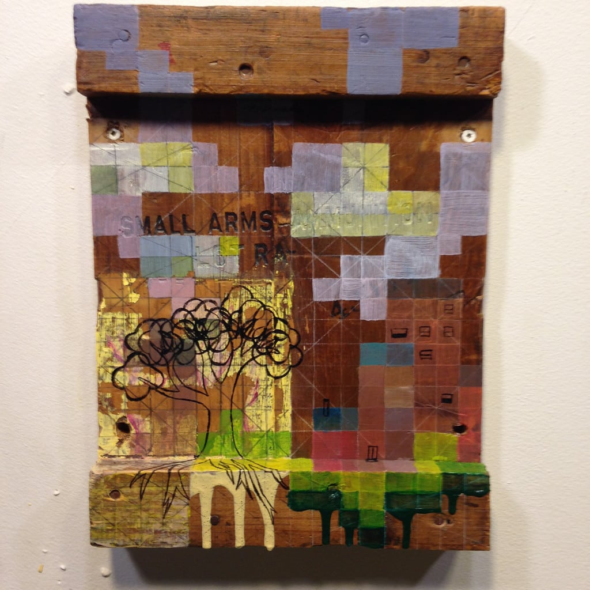

Cloud, acrylic on canvas, 4"x4" (2016)Luxury Living, acrylic on found wood, 26"x30" (2016)Block Party, public collaborative art-making project (2016)Rhapsody In Blue, study for two turntables (2016)push it along, handprints on wall (2016)Just Trying To Get By, paint marker on posted flyer (2016)

Small Arms, acrylic on found wood, 10"x13" (2015)